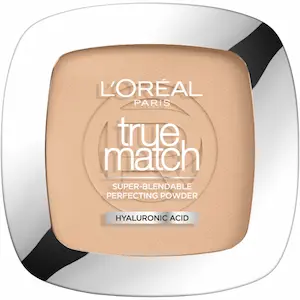
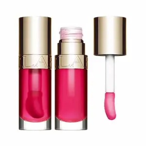

Обзоры косметики и честные тесты средств
В этом разделе вы найдете подробные обзоры уходовой и декоративной косметики: кремы для лица, сыворотки, тональные средства, тушь, помады и другие популярные продукты. Мы разбираем составы, тестируем средства и делимся реальными результатами использования.
Здесь также собраны подборки лучших средств по категориям — от бюджетной косметики до люксовых брендов. Это поможет быстрее выбрать продукт, который подойдет именно вашему типу кожи и задачам.
Консультации / ЗаписатьсяОбзоры уходовой и декоративной косметики.

La Roche-Posay Effaclar Duo(+)
Тестируем самый популярный крем от несовершенств. Реально ли он убирает пятна постакне за 2 недели или это маркетинг?
Читать обзор →
CeraVe Hydrating Cleanser
Бережное очищение по доступной цене. Разбираем состав и эффективность средства на чувствительной коже.
Читать обзор →
CeraVe Moisturizing Cream
SOS-средство для очень сухой кожи. Разбираем, как насыщенный состав с церамидами восстанавливает липидный барьер.
Читать обзор →
La Roche-Posay Lipikar Balm AP+M
La Roche-Posay Lipikar Balm AP+M: Спасение для атопичной и сухой кожи
Разбираемся, почему этот бальзам стал рекомендацией №1 дерматологов для снятия зуда, уменьшения покраснений и быстрого восстановления защитного барьера кожи.
Читать обзор →
La Roche-Posay Toleriane Dermallergo
Максимальный комфорт для сверхчувствительной кожи. Разбираем, как инновация [Сфингобиома] в сочетании с Нейросенсином восстанавливает защитный барьер и мгновенно успокаивает реактивную кожу, снижая ее чувствительность день за днем.
Читать обзор →
"La Roche-Posay Effaclar MAT Hidratant Seboregulator Pentru Ten Gras"
Мгновенное матирование и контроль жирного блеска. Разбираем, как формула с комплексом Sebulyse™ (более мощным себорегулятором, чем цинк) абсорбирует себум, увлажняет, не забивая поры, и обеспечивает стойкий матовый финиш, эффективно борясь с расширенными порами.
Читать обзор →
La Roche-Posay Pure Vitamin C10
Настоящий жидкий «иллюминатор» для тусклой кожи без сияния. Разбираем формулу со 10% чистым стабилизированным Витамином С, которая разглаживает морщины, выравнивает тон кожи и обеспечивает мгновенный эффект сияния (glow), не раздражая чувствительный эпидермис.
Читать обзор →
Vichy Liftactiv Specialist B3 Serum
Сыворотка-бестселлер для борьбы с пигментацией, тусклым цветом лица и морщинами. Разбираем, как мощный комплекс из 5% Ниацинамида (Витамин B3), Гликолевой кислоты, Вулканической воды Vichy и Пептидов обеспечивает эффект салонного пилинга, делая кожу сияющей и ровной.
Читать обзор →
Vichy Minéral 89 Booster Hidratant
Культовый ежедневный гель-бустер для восстановления барьера и сияния кожи. Разбираем, как рекордная концентрация — 89% Вулканической воды Vichy в сочетании с Гиалуроновой кислотой — мгновенно устраняет стянутость, защищает от городского стресса и дарит ощущение абсолютного комфорта.
Читать обзор →
La Roche-Posay Pure Niacinamide 10
Первая концентрированная сыворотка с 10% чистого ниацинамида для борьбы с пигментацией и её причинами. Разбираем, как сочетание ниацинамида, гиалуроновой кислоты и HEPES не только осветляет существующие пятна, но и предотвращает появление новых, возвращая коже ровный тон и здоровое сияние уже через 2 недели.
Читать обзор →
La Roche-Posay Cicaplast Baume B5+
Универсальный восстанавливающий бальзам с 5% пантенолом, мадекассосидом и новым комплексом Tribioma для регенерации поврежденного барьера кожи. Разбираем, как это средство мгновенно успокаивает раздражения, устраняет сухость и ускоряет заживление кожи после пилингов, ожогов и воздействия агрессивных активов, возвращая чувство комфорта всей семье.
Читать обзор →
CeraVe Foaming Facial Cleanser
Очищающий пенящийся гель, созданный совместно с дерматологами, обогащенный 3 основными церамидами, гиалуроновой кислотой и ниацинамидом для ухода за комбинированной и жирной кожей. Разбираем, как эта мягкая формула эффективно удаляет излишки себума и загрязнения, не нарушая защитный барьер кожи, обеспечивая ощущение свежести и успокоения после каждого использования.
Читать обзор →
CeraVe Resurfacing Retinol Serum
Обновляющая сыворотка с ретинолом, разработанная совместно с дерматологами, обогащена инкапсулированным ретинолом, экстрактом корня солодки и 3 важными церамидами. Мы анализируем, как эта эффективная формула помогает уменьшить видимость следов постакне и пор, выравнивая текстуру кожи и восстанавливая защитный барьер, не вызывая лишнего раздражения, для более сияющего и ровного тона лица.
Читать обзор →
Bioderma Sensibio AR+
Инновационный крем против покраснений, разработанный для гиперчувствительной кожи, обогащен эксклюзивным патентом Rosactiv™, эноксолоном и аллантоином. Мы анализируем, как обновленная формула AR+ биологически воздействует на причины расширения капилляров, мгновенно успокаивает чувство жара и укрепляет защитный барьер, заметно уменьшая интенсивность покраснений и возвращая лицу длительный комфорт и ровный тон.
Читать обзор →
Paula’s Choice 2% BHA Liquid Exfoliant
Легендарный жидкий эксфолиант с 2% салициловой кислотой (BHA), разработанный для глубокого очищения пор и преображения текстуры кожи. Анализируем, как уникальная формула с метилпропандиолом проникает вглубь сальных пробок, эффективно растворяя черные точки и борясь с воспалениями. Средство мгновенно выравнивает тон, успокаивает покраснения и стимулирует обновление клеток, возвращая коже естественное сияние, гладкость и безупречную чистоту.
Читать обзор →
La Roche-Posay Toleriane Rosaliac AR
Интенсивный успокаивающий концентрат, созданный специально для кожи, склонной к куперозу и розацеа. Анализируем, как уникальное сочетание Сфингобиомы и Нейросенсина воздействует на источник покраснений, мгновенно устраняя чувство жжения и предотвращая новые вспышки раздражения. Средство укрепляет защитный барьер и нормализует микробиом кожи, возвращая лицу ровный тон, длительный комфорт и устойчивость к внешним агрессорам в условиях городского климата.
Читать обзор →
Bioderma Cicabio Crème
Восстанавливающий и успокаивающий крем, созданный специально для поврежденной, раздраженной или кожи после процедур. Анализируем, как уникальный патент Antalgicine™ быстро воздействует на источник дискомфорта, мгновенно устраняя зуд и болевые ощущения. Формула, обогащенная гиалуроновой кислотой и антибактериальными агентами (медь-цинк), укрепляет защитный барьер и ускоряет регенерацию эпидермиса, возвращая лицу здоровый вид и длительный комфорт при контакте с агрессивными факторами внешней среды.
Читать обзор →
Isdin Isdinceutics Flavo-C Ultraglican
Инновационная антиоксидантная сыворотка в ампулах, созданная для нейтрализации окислительного стресса и восстановления утраченного объема кожи. Мы анализируем, как уникальная формула с ультрагликанами и чистым витамином С работает в синергии для стимуляции синтеза коллагена и укрепления опорной структуры дермы. Продукт обеспечивает интенсивное увлажнение благодаря гиалуроновой кислоте, заметно разглаживает первые мелкие морщины и придает лицу мгновенный эффект сияния, одновременно защищая кожный барьер от агрессивного воздействия городской среды.
Читать обзор →
Isdin FotoUltra Active Unify
Инновационный солнцезащитный флюид с тройным действием, специально разработанный для кожи с нарушениями пигментации. Мы подробно разбираем, как запатентованный комплекс DP3-Unify воздействует на все фазы синтеза меланина, заметно осветляя существующие пятна и предотвращая появление новых. Формула с экстремально высоким фактором защиты (SPF 100+) и легкой текстурой Fusion Fluid моментально сливается с кожей, обеспечивая надежный экран против UVA/UVB лучей. Благодаря аллантоину в составе, средство успокаивает эпидермис и выравнивает тон, возвращая лицу сияние и безупречный вид даже в условиях активного солнца.
Читать обзор →
Review Isdin FotoUltra Age Repair Fusion Water
Революционный фотопротектор на водной основе, объединяющий максимальную защиту от солнца с мощным антивозрастным уходом. Мы детально разбираем действие технологии DNA Repairsomes®, которая помогает клеткам восстанавливать повреждения на уровне ДНК, вызванные ультрафиолетом. Благодаря содержанию пептидов Q10 и коллагенового бустера, средство не только предотвращает фотостарение, но и активно сокращает существующие морщины, возвращая коже утраченную упругость. Ультралегкая текстура Fusion Water мгновенно впитывается, не оставляет жирного блеска и служит идеальной базой под макияж, обеспечивая комплексную защиту от городского смога и окислительного стресса.
Читать обзор →
Isdin Fotoprotector Fusion Water Magic
Ультралегкий солнцезащитный флюид на водной основе, ставший эталоном ежедневной защиты для всех типов кожи, включая чувствительную. Мы анализируем технологию Wet Skin, которая позволяет наносить средство даже на влажную кожу без потери эффективности и белых следов. Инновационная формула Safe-Eye Tech предотвращает раздражение слизистой глаз, а гиалуроновая кислота в составе глубоко увлажняет и оказывает антиоксидантное действие. Легкая текстура моментально впитывается, обеспечивая матовый финиш и надежный барьер против фотостарения в городских условиях и на отдыхе.
Читать обзор →
Bioderma Atoderm Intensive Baume
Этот дерматологический бальзам разработан для кожи, склонной к экземе и атопическому дерматиту. Формула с комплексом Skin Barrier Therapy™ помогает уменьшить зуд и предотвращает повторные обострения, восстанавливая защитный барьер кожи. В составе также есть ниацинамид и липиды, которые интенсивно питают и снижают воспаление. Отлично подходит для сухого климата и перепадов температуры в Молдове.
Читать обзор →
Bioderma Atoderm Gel Moussant
Мягкий пенящийся гель для очищения сухой и чувствительной кожи без ощущения стянутости. Формула с глицерином и термальной водой бережно удаляет загрязнения, поддерживает гидробаланс кожи и уменьшает раздражение. Средство подходит для ежедневного использования, обеспечивает комфорт и мягкость даже при обезвоженной коже, защищая её защитный барьер в условиях холодного или сухого воздуха Молдовы.
Читать обзор →Новый обзор скоро...
Мы постоянно тестируем новые продукты, чтобы делиться с вами только честными результатами.

Тональные кремы
Обзоры и подборки лучших тональных кремов

Консилеры
Лучшие консилеры и советы визажистов

Пудры
Лучшие матирующие и сияющие пудры

Тушь
Обзоры и подборки туши для объёма

Тени
Лучшие палетки и обзоры теней

Брови
Карандаши, гели и лучшие продукты

Ресницы
Средства для ресниц и подборки

Помады
Подборки лучших помад

Блески
Лучшие блески для губ

Хайлайтеры / Румяна
Обзоры и лучшие продукты
Часто задаваемые вопросы о косметике
Как выбрать косметику для своего типа кожи?
При выборе косметики важно учитывать тип кожи и её основные потребности. Например, для сухой кожи подходят средства с увлажняющими компонентами, такими как гиалуроновая кислота и церамиды. Для жирной кожи лучше выбирать лёгкие текстуры и средства с ниацинамидом или кислотами.
Можно ли доверять обзорам косметики?
Обзоры помогают узнать реальный опыт использования средств. Однако важно учитывать индивидуальные особенности кожи. Лучше читать несколько обзоров и обращать внимание на состав продукта.
Как понять, подходит ли средство для чувствительной кожи?
Для чувствительной кожи стоит выбирать продукты без агрессивных ароматизаторов и с минимальным количеством потенциальных раздражителей. Также полезно изучать активные ингредиенты и тестировать средство на небольшом участке кожи.
Что важнее при выборе косметики — бренд или состав?
Наиболее важным фактором является состав средства и его соответствие потребностям кожи. Даже бюджетные продукты могут быть эффективными, если они содержат полезные активные ингредиенты.
Как часто стоит менять уходовую косметику?
Менять уход не обязательно часто. Если средство подходит и дает хороший результат, его можно использовать длительное время. Но при изменении состояния кожи или времени года уход можно корректировать.